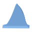

Support Fins ××mm runs entirely in your browser ☕ Ko-fiPrint it support-free, in any slicer
Turn a part into a stronger printing orientation, and Support Fins adds the breakaway fins that make that orientation printable — baked into the STL itself. It prints the same way for anyone who downloads it, on any machine.
Nothing is uploaded. The file is read inside this tab and never leaves your machine.
Free and open source. If it ever saves you a print, buy me a coffee ☕.